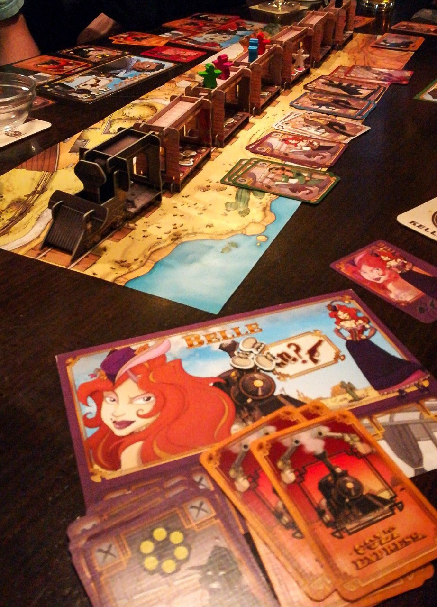

COLT EXPRESS

30/40 minuti 2-6 10+
L’inizio di una partita coincide con la scoperta della carta Round che deciderà il numero
delle carte da prendere (3-5) e la modalità (coperte-scoperte-ecc.).
Questa sarà anche legata alla durata della partita perché è scontato sottolineare che una carta Round da
3 comporterà una partita più breve. Dopo questa fase, tutti i partecipanti si attivano e pescheranno 6 carte
dal mazzo Personaggio da calare singolarmente. Qualora un giocatore non volesse calarla dovrà rinunciare e pescarne
altre tre dal mazzo. Le carte scartate formeranno un mazzo da girare e giocare, compiendo tutte le azioni specificate
dalla carta. Le due fasi importanti sono la pianificazione e il furto. Nella prima bisogna decidere
le carte da calare mentre la seconda è la parte attiva, perché si avvera tutto ciò che è scritto nelle
carte ma in una cronologia decisa dai giocatori stessi.
Le azioni sono:
-spostamento del bandito in un’altra carrozza del treno;
-spostamento del bandito in un’altra carrozza e attivazione della sparatoria con conseguente consegna della carta Proiettile agli altri giocatori;
-spostamento del bandito sul tetto della carrozza dove è già presente all’interno del vagone;
-raccolta di un oggetto dal bottino;
-pugno a un altro bandito, inviandolo in un’altra carrozza, e la confisca di parte del suo bottino;
-sparare un colpo a un bandito.
Le carte Proiettile sono neutrali ma prevalentemente inutile quindi chi viene sparato sarà costretto ad accumularle
e a limitare la scelta delle carte da calare. La carta Sceriffo muove il giocatore solo in orizzontale quindi i banditi
dovranno per forza muoversi sul tetto per scampare alla giustizia ma riceveranno comunque una carta Proiettile.
La carta Pescare costringe il giocatore a pescare altre tre carte dal mazzo.
Ogni personaggio ha un’abilità unica e individuale che aggiunge un po’ di movimento al gioco perché potrà modificare
leggermente le regole per caratterizzarle sul personaggio usato. Ad esempio, è impossibile sparare dal tetto ma un
determinato personaggio potrà farlo, oppure colpire un altro avversario e rubare il bottino, ecc.
Al termine del turno si scartano le carte inutili e si pesca nuovamente dal mazzo oppure,
quando le carte saranno finite, si dovrà contare tutto il bottino e prendere un eventuale bonus
da 1000 dollari se si è sparato più colpi di tutti gli altri.
Il vincitore è colui che ha accumulato più denaro, rivelandosi quindi “il bandito più feroce del West”.
RECENSIONE
Colt express si presenta esteticamente molto bene attraverso un treno e delle pedine tridimensionali che ti immedesimano nell’ambientazione del far west. Oltre all’aspetto estetico, il gioco non ci ha particolarmente colpito ed entusiasmato perché i turni erano lunghi e monotoni, inoltre non è presente l’aspetto strategico in quanto basato esclusivamente sulla fortuna.